Podcasts
| Billede | Podcast | Afsnit | Seneste afsnit | Handlinger |
|---|---|---|---|---|
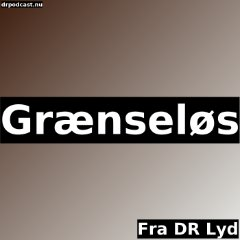 |
Grænseløs | 3 | 2026-09-03 05:02 | |
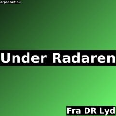 |
Under Radaren | 31 | 2026-09-03 05:02 | |
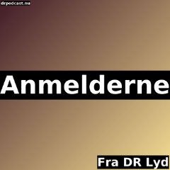 |
Anmelderne | 153 | 2026-09-03 05:00 | |
| Bibelen Leth fortalt | 210 | 2026-09-03 05:00 | ||
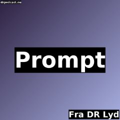 |
Prompt | 142 | 2026-09-03 05:00 | |
| Radioavisen | 102 | 2026-09-03 05:00 | ||
| Tyran | 51 | 2026-09-03 05:00 | ||
| Tyran | Leopold II | 1 | 2026-09-03 05:00 | ||
| Ubegribeligt | 195 | 2026-09-03 05:00 | ||
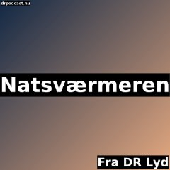 |
Natsværmeren | 30 | 2026-09-03 03:03 | |
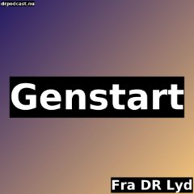 |
Genstart | 1483 | 2026-09-03 03:00 | |
| Tiden | 107 | 2026-09-03 03:00 | ||
| Før natten på P4 | 4 | 2026-09-02 22:03 | ||
| Sent | 0 | 2026-09-02 20:00 | ||
| P2 Koncerten | 0 | 2026-09-02 19:20 | ||
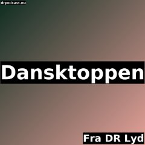 |
Dansktoppen | 7 | 2026-09-02 19:03 | |
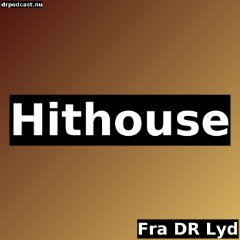 |
Hithouse | 3 | 2026-09-02 18:05 | |
| LIGA | 20 | 2026-09-02 18:05 | ||
| Puls | 19 | 2026-09-02 18:05 | ||
| P4 Bornholm regionale nyheder | 36 | 2026-09-02 17:30 | ||
| P4 Esbjerg regionale nyheder | 21 | 2026-09-02 17:30 | ||
| P4 Fyn regionale nyheder | 36 | 2026-09-02 17:30 | ||
| P4 København regionale nyheder | 36 | 2026-09-02 17:30 | ||
| P4 Midt & Vest regionale nyheder | 36 | 2026-09-02 17:30 | ||
| P4 Nordjylland regionale nyheder | 36 | 2026-09-02 17:30 | ||
| P4 Sjælland regionale nyheder | 36 | 2026-09-02 17:30 | ||
| P4 Syd regionale nyheder | 36 | 2026-09-02 17:30 | ||
| P4 Trekanten regionale nyheder | 36 | 2026-09-02 17:30 | ||
| P4 Østjylland regionale nyheder | 33 | 2026-09-02 17:30 | ||
| Dagen er din | 3 | 2026-09-02 16:05 | ||
| Dagen og Musikken | 3 | 2026-09-02 16:05 | ||
| Gruppechatten | 19 | 2026-09-02 16:05 | ||
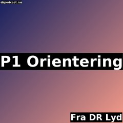 |
P1 Orientering | 123 | 2026-09-02 16:05 | |
| Salonen | 3 | 2026-09-02 16:05 | ||
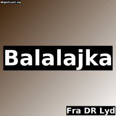 |
Balalajka | 84 | 2026-09-02 16:03 | |
| K-Live | 480 | 2026-09-02 15:03 | ||
| P4 Eftermiddag Bornholm | 3 | 2026-09-02 15:03 | ||
| P4 Eftermiddag Fyn | 3 | 2026-09-02 15:03 | ||
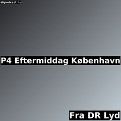 |
P4 Eftermiddag København | 3 | 2026-09-02 15:03 | |
| P4 Eftermiddag Midt & Vest | 3 | 2026-09-02 15:03 | ||
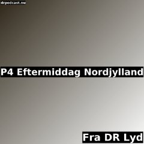 |
P4 Eftermiddag Nordjylland | 3 | 2026-09-02 15:03 | |
| P4 Eftermiddag Sjælland | 3 | 2026-09-02 15:03 | ||
| P4 Eftermiddag Syd & Esbjerg | 3 | 2026-09-02 15:03 | ||
| P4 Eftermiddag Trekanten | 3 | 2026-09-02 15:03 | ||
| P4 Eftermiddag Østjylland | 3 | 2026-09-02 15:03 | ||
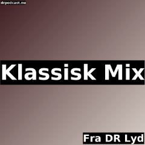 |
Klassisk Mix | 21 | 2026-09-02 14:03 | |
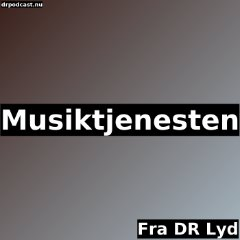 |
Musiktjenesten | 3 | 2026-09-02 14:03 | |
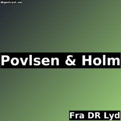 |
Povlsen & Holm | 80 | 2026-09-02 14:03 | |
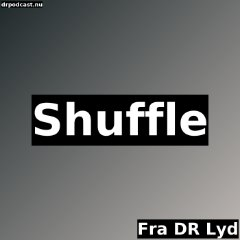 |
Shuffle | 3 | 2026-09-02 14:03 | |
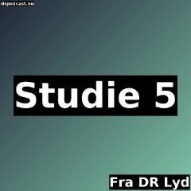 |
Studie 5 | 3 | 2026-09-02 14:03 | |
| Frokostkoncerten | 0 | 2026-09-02 13:03 | ||
| Lydsporet | 0 | 2026-09-02 13:03 | ||
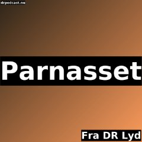 |
Parnasset | 76 | 2026-09-02 13:00 | |
| P1 Debat | 159 | 2026-09-02 12:15 | ||
| P4 Play | 3 | 2026-09-02 12:15 | ||
| P5 på stribe | 3 | 2026-09-02 12:15 | ||
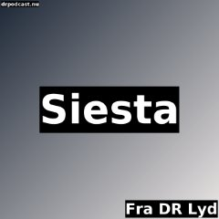 |
Siesta | 21 | 2026-09-02 12:15 | |
| Popdatering | 3 | 2026-09-02 12:03 | ||
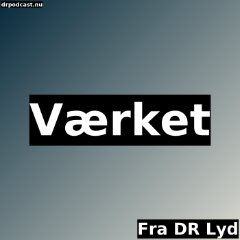 |
Værket | 18 | 2026-09-02 11:03 | |
| Formiddag For Evigt | 3 | 2026-09-02 10:03 | ||
| Formiddag med Simpson | 68 | 2026-09-02 10:03 | ||
| Formiddag på 4'eren | 3 | 2026-09-02 10:03 | ||
| P5 med Christina Bjørn | 3 | 2026-09-02 10:03 | ||
| Verden ifølge Gram | 19 | 2026-09-02 09:05 | ||
| Drømmeholdet | 3 | 2026-09-02 09:03 | ||
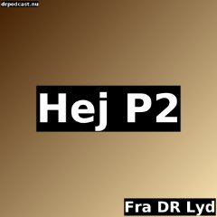 |
Hej P2 | 18 | 2026-09-02 08:30 | |
| Morgenandagten | 204 | 2026-09-02 08:05 | ||
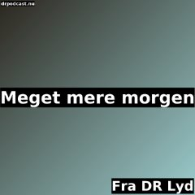 |
Meget mere morgen | 3 | 2026-09-02 07:05 | |
| Morgenbeatet | 3 | 2026-09-02 07:05 | ||
| Snooze | 3 | 2026-09-02 07:05 | ||
| Klassisk morgen | 21 | 2026-09-02 06:05 | ||
| P1 Morgen | 177 | 2026-09-02 06:05 | ||
| P4 Morgen Bornholm | 3 | 2026-09-02 06:05 | ||
| P4 Morgen Fyn | 0 | 2026-09-02 06:05 | ||
| P4 Morgen København | 3 | 2026-09-02 06:05 | ||
| P4 Morgen Midt & Vest | 3 | 2026-09-02 06:05 | ||
| P4 Morgen Nordjylland | 3 | 2026-09-02 06:05 | ||
| P4 Morgen Sjælland | 3 | 2026-09-02 06:05 | ||
| P4 Morgen Syd & Esbjerg | 3 | 2026-09-02 06:05 | ||
| P4 Morgen Trekanten | 3 | 2026-09-02 06:05 | ||
| P4 Morgen Østjylland | 0 | 2026-09-02 06:05 | ||
| Go' Morgen P3 | 3 | 2026-09-02 06:03 | ||
| Morgenklubben | 210 | 2026-09-02 05:03 | ||
| Brinkmanns briks | 356 | 2026-09-02 05:00 | ||
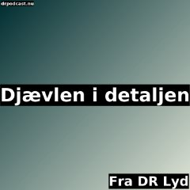 |
Djævlen i detaljen | 282 | 2026-09-02 05:00 | |
| Huller i historien | 35 | 2026-09-02 05:00 | ||
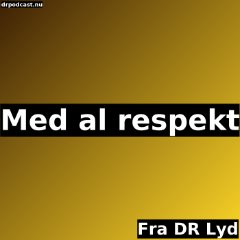 |
Med al respekt | 1 | 2026-09-02 05:00 | |
| Skønlitteratur | 121 | 2026-09-02 05:00 | ||
| Splittet til atomer | 121 | 2026-09-02 05:00 | ||
| P4 Aften | 1 | 2026-09-01 18:05 | ||
| Vingesus - gammel musik i nutid | 26 | 2026-09-01 18:05 | ||
| Nynne FM | 13 | 2026-09-01 18:03 | ||
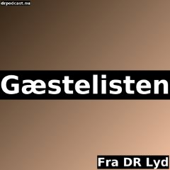 |
Gæstelisten | 25 | 2026-09-01 16:05 | |
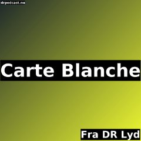 |
Carte Blanche | 74 | 2026-09-01 16:00 | |
| Guld og grønne skove | 27 | 2026-09-01 09:05 | ||
| Genstart Dox | 37 | 2026-09-01 05:02 | ||
| Tvunget i krig | 3 | 2026-09-01 05:02 | ||
| Du kender typen | 183 | 2026-09-01 05:00 | ||
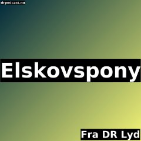 |
Elskovspony | 59 | 2026-09-01 05:00 | |
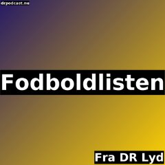 |
Fodboldlisten | 367 | 2026-09-01 05:00 | |
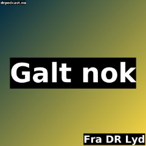 |
Galt nok | 120 | 2026-09-01 05:00 | |
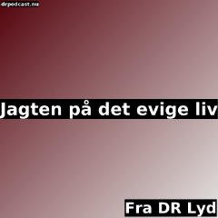 |
Jagten på det evige liv | 50 | 2026-09-01 05:00 | |
| Kampen om historien | 221 | 2026-09-01 05:00 | ||
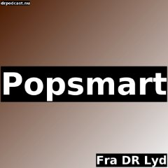 |
Popsmart | 77 | 2026-09-01 05:00 | |
| Verdens navle | 32 | 2026-09-01 05:00 | ||
| Crush | 1 | 2026-08-31 20:00 | ||
| Ugens album | 33 | 2026-08-31 19:00 | ||
| Hammers komponister | 70 | 2026-08-31 18:05 | ||
| Toner | 33 | 2026-08-31 16:05 | ||
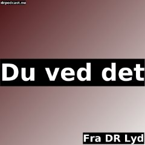 |
Du ved det | 55 | 2026-08-31 14:03 | |
| Ring til regeringen | 14 | 2026-08-31 12:15 | ||
| Supertanker | 364 | 2026-08-31 11:03 | ||
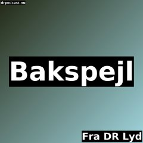 |
Bakspejl | 153 | 2026-08-31 05:00 | |
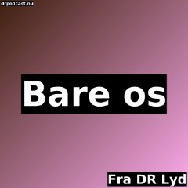 |
Bare os | 2 | 2026-08-31 05:00 | |
| Det' en klassiker | 52 | 2026-08-31 05:00 | ||
| Ibens Harem - 18 år efter | 40 | 2026-08-31 05:00 | ||
| Sorte tal | 41 | 2026-08-31 05:00 | ||
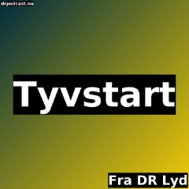 |
Tyvstart | 41 | 2026-08-31 05:00 | |
| Vildt Naturligt | 302 | 2026-08-31 05:00 | ||
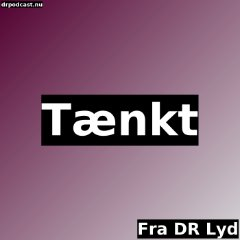 |
Tænkt | 0 | 2026-08-30 20:00 | |
| P2 Guldkoncerten | 0 | 2026-08-30 19:20 | ||
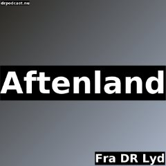 |
Aftenland | 3 | 2026-08-30 19:03 | |
| Mon Amie Complexe | 25 | 2026-08-30 19:03 | ||
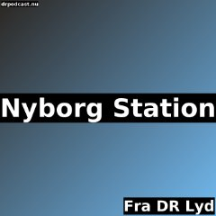 |
Nyborg Station | 6 | 2026-08-30 18:03 | |
| Sangbogen - med Muff og Hammer | 147 | 2026-08-30 18:03 | ||
| Længe leve albummet | 20 | 2026-08-30 17:03 | ||
| Mellem os med Glenn Bech | 1 | 2026-08-30 16:03 | ||
| Sporvognen | 3 | 2026-08-30 16:03 | ||
| Hotellet | 4 | 2026-08-30 14:03 | ||
| Sjæl | 23 | 2026-08-30 14:03 | ||
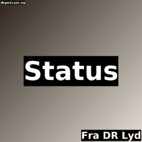 |
Status | 41 | 2026-08-30 14:03 | |
| Musikquizzen | 23 | 2026-08-30 14:00 | ||
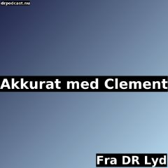 |
Akkurat med Clement | 109 | 2026-08-30 12:15 | |
| Giro 413 | 4 | 2026-08-30 12:15 | ||
| Greatest Hits | 14 | 2026-08-30 12:00 | ||
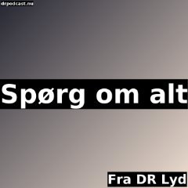 |
Spørg om alt | 18 | 2026-08-30 11:03 | |
| Det dér med Anders Breinholt | 97 | 2026-08-30 10:03 | ||
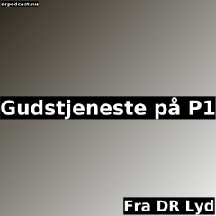 |
Gudstjeneste på P1 | 41 | 2026-08-30 10:03 | |
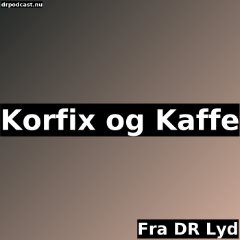 |
Korfix og Kaffe | 5 | 2026-08-30 10:03 | |
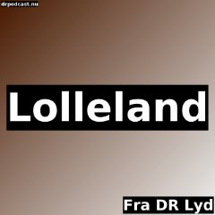 |
Lolleland | 0 | 2026-08-30 10:03 | |
| To vers og et omkvæd | 40 | 2026-08-30 10:03 | ||
| Stines søndag | 118 | 2026-08-30 09:05 | ||
| P4 Weekend Bornholm | 16 | 2026-08-30 07:03 | ||
| P4 Weekend Fyn | 16 | 2026-08-30 07:03 | ||
| P4 Weekend København | 16 | 2026-08-30 07:03 | ||
| P4 Weekend Midt & Vest | 16 | 2026-08-30 07:03 | ||
| P4 Weekend Nordjylland | 16 | 2026-08-30 07:03 | ||
| P4 Weekend Sjælland | 16 | 2026-08-30 07:03 | ||
| P4 Weekend Syd & Esbjerg | 16 | 2026-08-30 07:03 | ||
| P4 Weekend Trekanten | 16 | 2026-08-30 07:03 | ||
| P4 Weekend Østjylland | 16 | 2026-08-30 07:03 | ||
| P5 Morgen | 8 | 2026-08-30 07:03 | ||
| WeekendMorgen | 8 | 2026-08-30 07:03 | ||
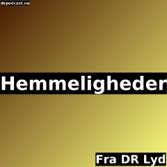 |
Hemmeligheder | 251 | 2026-08-30 05:00 | |
| Hvad ville Jesus have sagt? | 166 | 2026-08-30 05:00 | ||
| Pilgrim - på rejse i troens univers | 305 | 2026-08-30 05:00 | ||
| Sort Søndag | 372 | 2026-08-30 05:00 | ||
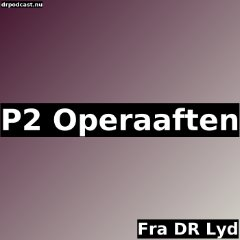 |
P2 Operaaften | 0 | 2026-08-29 19:20 | |
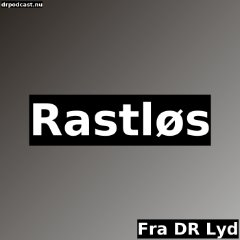 |
Rastløs | 29 | 2026-08-29 19:03 | |
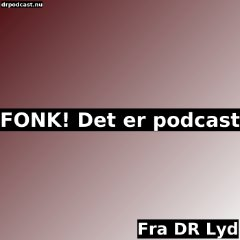 |
FONK! Det er podcast | 20 | 2026-08-29 18:15 | |
| Bravo - med Lotte Heise | 26 | 2026-08-29 18:03 | ||
| Eldorado | 2 | 2026-08-29 16:03 | ||
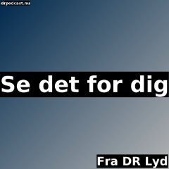 |
Se det for dig | 2 | 2026-08-29 16:03 | |
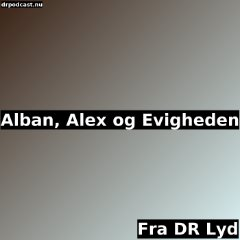 |
Alban, Alex og Evigheden | 28 | 2026-08-29 15:03 | |
| Det Store Talkshow | 4 | 2026-08-29 14:03 | ||
| Singlepladen | 4 | 2026-08-29 14:03 | ||
| Den store sportsquiz | 3 | 2026-08-29 14:00 | ||
| Magisk | 16 | 2026-08-29 12:15 | ||
| Tag Mig Tilbage | 0 | 2026-08-29 12:03 | ||
| Sara & Monopolet - podcast | 421 | 2026-08-29 12:00 | ||
| Benægt, benægt, benægt | 4 | 2026-08-29 10:03 | ||
| Debut | 20 | 2026-08-29 10:03 | ||
| Pladeklubben | 20 | 2026-08-29 10:03 | ||
| Svingdøren | 134 | 2026-08-29 10:03 | ||
| Norsken, svensken og dansken | 20 | 2026-08-29 07:03 | ||
| Damerne først | 123 | 2026-08-29 05:00 | ||
| I god tro | 2 | 2026-08-29 05:00 | ||
| Udsyn | 28 | 2026-08-29 05:00 | ||
| Flex | 19 | 2026-08-28 20:00 | ||
| På scenen | 3 | 2026-08-28 18:05 | ||
| Bangers med Ena | 29 | 2026-08-28 18:00 | ||
| Fezten | 29 | 2026-08-28 16:05 | ||
| Vistis Weekendguide | 3 | 2026-08-28 16:05 | ||
| Langefredag | 19 | 2026-08-28 16:03 | ||
| Christian Bondes radioprogram | 14 | 2026-08-28 14:03 | ||
| Første Omgang | 1 | 2026-08-28 14:03 | ||
| Første række | 21 | 2026-08-28 14:03 | ||
| Tættere på himlen | 27 | 2026-08-28 14:03 | ||
| På dansk | 40 | 2026-08-28 14:00 | ||
| Weekend med K | 22 | 2026-08-28 12:15 | ||
| Farrock | 20 | 2026-08-28 10:03 | ||
| Ugens gæst | 27 | 2026-08-28 10:03 | ||
| Lyssky | 105 | 2026-08-28 06:00 | ||
| 10-20-30 | 112 | 2026-08-28 05:00 | ||
| Dårlig stemning | 67 | 2026-08-28 05:00 | ||
| Signes have | 44 | 2026-08-28 05:00 | ||
| Stjerner og striber | 196 | 2026-08-28 05:00 | ||
| Tabloid | 25 | 2026-08-28 05:00 | ||
| Verdens bedste film | 161 | 2026-08-28 05:00 | ||
| Foyeren | 17 | 2026-08-27 18:05 | ||
| Magten | 35 | 2026-08-27 05:00 | ||
| Troldspejlet - podcast | 67 | 2026-08-27 05:00 | ||
| Tyran | Macias | 4 | 2026-08-27 05:00 | ||
| KUP | 24 | 2026-08-26 05:03 | ||
| KUP | Kendis-kuppet | 4 | 2026-08-26 05:03 | ||
| I Mine Ører | 18 | 2026-08-25 06:00 | ||
| Guidede pauser | 10 | 2026-08-24 06:04 | ||
| Musikpausen | 5 | 2026-08-24 06:04 | ||
| Ro På | 107 | 2026-08-24 06:04 | ||
| Pauser der virker | 2 | 2026-08-24 06:01 | ||
| Vis mig din pause | 2 | 2026-08-24 06:01 | ||
| Brainrot | 0 | 2026-08-24 00:03 | ||
| Festivalsommer | 12 | 2026-08-23 17:03 | ||
| P2 på Kulturmødet Mors | 1 | 2026-08-22 14:03 | ||
| P6 med Zaulich | 1 | 2026-08-21 14:03 | ||
| Delt i 0999 | 0 | 2026-08-16 22:00 | ||
| P6 på Syd for Solen | 0 | 2026-08-14 16:05 | ||
| Hørt! | 14 | 2026-08-09 16:03 | ||
| Stegelmanns score | 7 | 2026-08-09 15:03 | ||
| 3. halvleg | 1 | 2026-08-09 14:03 | ||
| Heise i hængekøjen | 2 | 2026-08-07 16:05 | ||
| Fortolket | 0 | 2026-08-07 14:03 | ||
| Vikar på P6 med Selina Gin | 5 | 2026-08-06 16:05 | ||
| Danske sommerstemninger | 1 | 2026-08-05 16:05 | ||
| Det vi hører | 25 | 2026-08-03 16:05 | ||
| K-Serier | 28 | 2026-08-03 05:02 | ||
| Typisk os! | 5 | 2026-08-02 10:03 | ||
| Debutkoncert | 0 | 2026-08-01 12:15 | ||
| Touren på P4 | 21 | 2026-07-26 18:03 | ||
| Stafetten med Clement | 40 | 2026-07-26 12:15 | ||
| Radiofortællinger | 163 | 2026-07-09 05:00 | ||
| Peter og Profeterne | 40 | 2026-07-08 05:00 | ||
| Klassisk Tour | 5 | 2026-07-04 06:04 | ||
| Blind date | 15 | 2026-07-01 05:04 | ||
| Det Gode Liv | 16 | 2026-06-27 18:00 | ||
| Vistis vinyler | 206 | 2026-06-27 14:03 | ||
| Ditlev & Døden | 118 | 2026-06-27 05:00 | ||
| P3 Pulten | 17 | 2026-06-26 20:00 | ||
| Top100 - alle sangene | 5 | 2026-06-26 05:00 | ||
| Tyran | Muammar Gaddafi | 6 | 2026-06-25 05:00 | ||
| Ramt af kærlighed | 41 | 2026-06-24 05:05 | ||
| De Lovløse | 50 | 2026-06-23 05:06 | ||
| Den elektriske svindler | 7 | 2026-06-23 05:06 | ||
| Forbrydelsens Anatomi | 40 | 2026-06-23 05:05 | ||
| Præstedatterens hemmelighed | 6 | 2026-06-23 05:05 | ||
| Da min kæreste blev sindssyg | 5 | 2026-06-23 05:04 | ||
| Hvem bortførte vores børn? | 5 | 2026-06-23 05:04 | ||
| Hvem er Pil? | 5 | 2026-06-23 05:04 | ||
| Hvem er... | 40 | 2026-06-23 05:04 | ||
| Mysteriet om Adam | 5 | 2026-06-23 05:04 | ||
| Mørklagt | 55 | 2026-06-23 05:04 | ||
| Meditationer | 29 | 2026-06-15 05:10 | ||
| Musik & meditation | 29 | 2026-06-15 05:10 | ||
| Flyvende tallerken | 132 | 2026-06-15 05:00 | ||
| Off The Record | 26 | 2026-06-14 12:15 | ||
| DR Romanprisen | 86 | 2026-06-13 14:03 | ||
| Top100 Finale | 1 | 2026-06-12 14:03 | ||
| Top100 på P2 | 11 | 2026-06-12 12:15 | ||
| Top100 på P4 | 15 | 2026-06-12 12:15 | ||
| Top100 på P5 | 15 | 2026-06-12 12:15 | ||
| Top100 på P6 | 15 | 2026-06-12 12:15 | ||
| Top100 på P8 | 15 | 2026-06-12 12:15 | ||
| Top100 på P3 | 15 | 2026-06-12 12:03 | ||
| Opkald til fronten | 3 | 2026-06-10 06:02 | ||
| Hotel Romantik Podcasten | 8 | 2026-06-06 06:00 | ||
| Torsdagskoncerten | 0 | 2026-06-04 19:20 | ||
| Hjerteflimmer for voksne | 220 | 2026-06-01 06:00 | ||
| Klassisk weekend | 12 | 2026-05-31 07:03 | ||
| Sommeren '86 | 4 | 2026-05-29 05:04 | ||
| Danmarks glemte fange | 4 | 2026-05-28 05:03 | ||
| KUP | Helikopterkuppet | 4 | 2026-05-18 05:03 | ||
| Uden Sidestykke | 29 | 2026-05-17 05:00 | ||
| Døde Forældres Klub | 10 | 2026-05-15 13:34 | ||
| P2 Talent 2026, Bjarke Schousboe | 1 | 2026-05-14 16:03 | ||
| Tyran | Enver Hoxha | 5 | 2026-05-14 05:00 | ||
| Hvem er Anton Westerlin? | 6 | 2026-05-05 05:05 | ||
| La Mif | 4 | 2026-05-04 05:03 | ||
| Det sidste måltid | 195 | 2026-04-24 05:00 | ||
| Selskab | 5 | 2026-04-10 14:03 | ||
| Ministermord | 60 | 2026-04-09 05:00 | ||
| Tyran | Charles Taylor | 5 | 2026-04-09 05:00 | ||
| Piger på Piller | 4 | 2026-04-08 05:03 | ||
| Hvem er Zar Paulo? | 5 | 2026-03-26 05:04 | ||
| Ro På koncert | 8 | 2026-03-20 06:00 | ||
| Det gode selskab | 3 | 2026-03-19 10:03 | ||
| P2 Kunstner 2026, Joachim Becerra Thomsen | 1 | 2026-03-18 16:05 | ||
| Skriget fra asylet | 5 | 2026-03-06 05:00 | ||
| Tyran | Ayatollah Khomeini | 7 | 2026-03-05 05:00 | ||
| KUP | Hollywood hacket | 4 | 2026-03-02 05:03 | ||
| Det vilde Vesten | 26 | 2026-02-23 06:00 | ||
| Den giftige tvivl | 6 | 2026-02-22 05:00 | ||
| Ro På - i den sidste tid | 4 | 2026-02-06 05:01 | ||
| Efter Sporløs | 5 | 2026-02-05 05:00 | ||
| Outsiderne | 4 | 2026-01-31 19:03 | ||
| Hvem er Kanye West? | 6 | 2026-01-30 05:05 | ||
| Lægens bord | 33 | 2026-01-16 05:01 | ||
| Tyran | Ceausescu | 7 | 2026-01-08 05:00 | ||
| Elektrologen | 36 | 2025-12-31 05:00 | ||
| P2 Kunstner 2025, Nightingale String Quartet | 0 | 2025-12-30 16:05 | ||
| Klog på Sprog | 319 | 2025-12-26 11:03 | ||
| Søvnudsigten | 19 | 2025-12-26 05:00 | ||
| Ring til Trine | 13 | 2025-12-25 05:00 | ||
| Det kimer nu | 2 | 2025-12-24 10:00 | ||
| Hjernekassen på P1 | 603 | 2025-12-24 05:00 | ||
| Afrobeats | 25 | 2025-12-22 05:00 | ||
| Rap & Rytmer | 75 | 2025-12-22 05:00 | ||
| Spice - med Nikkie og Laila | 189 | 2025-12-21 18:00 | ||
| Topkarakter | 27 | 2025-12-21 05:01 | ||
| Selvoptaget | 8 | 2025-12-19 05:00 | ||
| Fængsel | 57 | 2025-12-18 05:00 | ||
| Emil & de truede arter | 8 | 2025-12-17 05:03 | ||
| KUP | Faldskærmskuppet | 4 | 2025-12-15 05:03 | ||
| FE-kvindens hemmelighed | 3 | 2025-12-04 05:02 | ||
| Hvem er Scarlet Pleasure? | 5 | 2025-12-02 05:04 | ||
| Pigen fra slumkvarteret | 4 | 2025-12-01 05:03 | ||
| Lyden af DR Symfoniorkestret i 100 år | 5 | 2025-11-30 16:03 | ||
| De livsfarlige bånd | 7 | 2025-11-30 05:01 | ||
| P8 Sessions | 4 | 2025-11-28 10:03 | ||
| P6 elsker | 71 | 2025-11-28 05:00 | ||
| Gummikongens krig | 5 | 2025-11-24 05:04 | ||
| Folk-ish | 16 | 2025-11-24 05:00 | ||
| Forført af fart | 4 | 2025-11-20 05:03 | ||
| Tyran | Trujillo | 4 | 2025-11-20 05:00 | ||
| KUP | Klatretyven i Paris | 4 | 2025-11-10 05:03 | ||
| OMG! Musikernes bedste historier | 8 | 2025-10-30 06:00 | ||
| Flüggers forbudte farver | 3 | 2025-10-28 05:02 | ||
| Odderhusets hemmelighed | 3 | 2025-10-27 05:02 | ||
| Tyran | Mao | 6 | 2025-10-23 05:00 | ||
| De usynlige lister | 3 | 2025-10-22 05:02 | ||
| Det, vi skændes om | 29 | 2025-10-19 12:00 | ||
| Velfærdsstatens vanvid | 8 | 2025-10-14 05:00 | ||
| Orkesterguiden | 5 | 2025-10-13 06:00 | ||
| Gift ved første blik podcasten | 33 | 2025-10-09 06:00 | ||
| Politiets beskidte sager | 3 | 2025-09-29 05:02 | ||
| KUP | Walkie-talkie-kuppet | 4 | 2025-09-22 05:03 | ||
| Ultra taler om skærmen | 1 | 2025-09-16 05:00 | ||
| Tyran | Bokassa | 6 | 2025-09-11 05:00 | ||
| Agent Samsam | 17 | 2025-09-10 05:00 | ||
| Hvem er Lord Siva? | 5 | 2025-09-02 05:04 | ||
| Jacob Gade og Jalousien | 3 | 2025-08-04 11:03 | ||
| Søren Ryges sidste tur i haven | 5 | 2025-07-28 05:00 | ||
| Tyran | Franco | 6 | 2025-07-10 05:00 | ||
| Recepten på P4 | 25 | 2025-06-28 12:15 | ||
| I døden for tronen | 12 | 2025-06-24 05:11 | ||
| Hvem er Benjamin Hav? | 6 | 2025-06-24 05:05 | ||
| Imran mod giganterne | 5 | 2025-06-24 05:04 | ||
| Hittebarnet | 4 | 2025-06-24 05:03 | ||
| Roskilde-tragedien | 4 | 2025-06-24 05:03 | ||
| Vores dømte ven | 4 | 2025-06-24 05:03 | ||
| Virkelig | 27 | 2025-06-23 13:00 | ||
| Ro på recept | 10 | 2025-06-23 05:04 | ||
| Stemplet som psykopat | 3 | 2025-06-18 05:02 | ||
| Det vi hørte i 100 år | 10 | 2025-06-17 14:01 | ||
| Guldregn | 24 | 2025-06-17 05:00 | ||
| Tyran | Nijasov | 4 | 2025-05-29 05:00 | ||
| Mord i gruppechatten | 3 | 2025-05-18 05:02 | ||
| Hvem er Billie Eilish? | 5 | 2025-05-13 05:04 | ||
| Vejen til Paradis | 6 | 2025-05-04 05:05 | ||
| Hvis du tør | 15 | 2025-05-02 05:00 | ||
| Med ørerne på stilke | 8 | 2025-04-29 05:03 | ||
| P2 Talent 2025, Valdemar Wenzel Most | 0 | 2025-04-24 16:05 | ||
| Tyran | Milosevic | 5 | 2025-04-24 05:00 | ||
| Feature | 3 | 2025-04-19 05:00 | ||
| Den stjålne dreng | 4 | 2025-04-16 05:03 | ||
| Tyran | Hirohito | 6 | 2025-03-20 05:00 | ||
| Rolig mix | 10 | 2025-03-19 05:09 | ||
| Hvem er Andreas Odbjerg? | 5 | 2025-03-18 05:04 | ||
| Mordet i sukkerplantagen | 4 | 2025-03-15 05:03 | ||
| Nulstillet | 3 | 2025-03-10 05:02 | ||
| Tyrannens fald | 3 | 2025-02-23 18:02 | ||
| Tyran | Pinochet | 5 | 2025-02-06 05:00 | ||
| Sofie og de nye tider | 16 | 2025-01-15 05:00 | ||
| Seriestalker | 6 | 2025-01-14 05:05 | ||
| Drømmen om Elvis | 3 | 2025-01-08 05:02 | ||
| Modstandskvinderne | 4 | 2024-12-29 05:03 | ||
| Dødsdømt | 24 | 2024-12-24 05:00 | ||
| Kapitalisterne | 45 | 2024-12-20 05:00 | ||
| Vennepunkt | 43 | 2024-12-19 14:00 | ||
| Falske minder | 6 | 2024-12-19 05:05 | ||
| Et stykke med Hedegaard | 6 | 2024-12-16 05:05 | ||
| Tyran | Lenin | 6 | 2024-12-12 05:00 | ||
| Hvem er Infernal? | 4 | 2024-12-10 05:03 | ||
| Min ven Hermann Göring | 6 | 2024-12-09 05:05 | ||
| Indersiden med Viktor Fischer | 8 | 2024-12-07 05:00 | ||
| Truckerne | 10 | 2024-12-04 05:01 | ||
| Lejemordet i Ugledige | 5 | 2024-11-26 05:04 | ||
| Fantomet fra Rusland | 5 | 2024-11-10 05:04 | ||
| Tyran | Kim Il Sung & Kim Jong Il | 5 | 2024-10-31 05:00 | ||
| Krig | 38 | 2024-10-30 05:00 | ||
| Hvem er Simon Kvamm? | 6 | 2024-10-22 05:05 | ||
| Oprør i Oregon | 3 | 2024-10-16 03:00 | ||
| Hånden på Hjertet | 36 | 2024-09-29 12:00 | ||
| Tyran | Suharto | 5 | 2024-09-26 05:00 | ||
| Kvinder i krig | 10 | 2024-09-22 05:02 | ||
| Enken med nazidokumenterne | 5 | 2024-09-10 05:04 | ||
| Mens vi husker det | 4 | 2024-09-04 05:03 | ||
| Hvem er Christopher? | 5 | 2024-09-03 05:04 | ||
| Tyran | Benito Mussolini | 6 | 2024-08-22 05:00 | ||
| Tyran | Idi Amin | 7 | 2024-08-22 05:00 | ||
| Tyran | Papa Doc | 5 | 2024-08-22 05:00 | ||
| Tyran | Pol Pot | 6 | 2024-08-22 05:00 | ||
| Operaguiden | 14 | 2024-08-18 05:06 | ||
| Peter prepper | 14 | 2024-08-12 05:00 | ||
| Brev til 2050 | 6 | 2024-07-25 05:00 | ||
| Sopran versus AI | 5 | 2024-07-02 05:00 | ||
| Ramt af kunst | 99 | 2024-06-27 05:00 | ||
| Lottomysteriet - Genfortalt | 8 | 2024-06-25 05:07 | ||
| Hvem er Taylor Swift? | 5 | 2024-06-25 05:04 | ||
| Stå af ræset | 5 | 2024-06-25 05:04 | ||
| Balladen om Sidsel | 4 | 2024-06-25 05:03 | ||
| Barneliget på Fejø | 4 | 2024-06-25 05:03 | ||
| Marias arv | 4 | 2024-06-25 05:03 | ||
| Et farligt match | 3 | 2024-06-25 05:02 | ||
| Enter - Internettets skygge | 30 | 2024-06-19 05:00 | ||
| Vidnesbyrd - Sexisme i musikbranchen | 4 | 2024-06-10 05:04 | ||
| Sommeren '21 | 3 | 2024-06-03 05:02 | ||
| Grundtvig Leth fortalt | 5 | 2024-05-29 05:04 | ||
| Tømmermænd på P3 | 8 | 2024-05-26 22:00 | ||
| SOLO med Anna Lin | 10 | 2024-05-08 05:04 | ||
| Et giftigt hensyn | 3 | 2024-05-05 05:02 | ||
| Massøren | 6 | 2024-04-30 05:05 | ||
| Hvem er The Minds of 99? II | 5 | 2024-04-16 05:04 | ||
| Visionærerne | 24 | 2024-04-11 05:00 | ||
| Inden vi dør | 13 | 2024-04-10 05:00 | ||
| Besættelsen | 5 | 2024-04-09 05:04 | ||
| Top 1000 | 13 | 2024-04-01 16:00 | ||
| Faldet - Lydfølsom version | 5 | 2024-03-27 05:03 | ||
| Faldet - mysteriet om de rystede hjerner | 5 | 2024-03-27 05:03 | ||
| Hvem er Tessa? | 4 | 2024-03-05 05:03 | ||
| Et klassemord | 7 | 2024-02-29 05:00 | ||
| P1 forklarer | 29 | 2024-02-23 12:09 | ||
| Voksen eller kaos | 28 | 2024-02-22 05:00 | ||
| En livsfarlig hemmelighed | 3 | 2024-02-18 18:02 | ||
| Dronningeriget | 27 | 2024-01-14 05:00 | ||
| Annas Margrethe | 5 | 2024-01-12 05:00 | ||
| Tyran | Saddam Hussein | 6 | 2024-01-11 05:01 | ||
| Op af kaninhullet | 60 | 2024-01-02 13:00 | ||
| Fremtiden på P1 | 17 | 2023-12-30 13:03 | ||
| Absolut Mathias Helt | 73 | 2023-12-29 05:00 | ||
| Sex IRL | 89 | 2023-12-28 05:00 | ||
| Fantasier | 42 | 2023-12-27 05:00 | ||
| Audiens | 17 | 2023-12-25 14:03 | ||
| Meget mere Matador | 41 | 2023-12-24 05:00 | ||
| Kidnappet | 5 | 2023-12-22 05:04 | ||
| Sangskriver | 12 | 2023-12-20 05:00 | ||
| Moden & cool | 7 | 2023-12-11 05:06 | ||
| Marcela 1989 | 4 | 2023-12-04 05:03 | ||
| Carmen Curlers - En ekstra krølle | 7 | 2023-11-24 06:00 | ||
| Kongen af Vesterbro | 7 | 2023-11-23 05:06 | ||
| Piller fra helvede | 3 | 2023-11-23 05:02 | ||
| Gyldne generationer - Burgaard, Mortensen og Tanderup | 3 | 2023-11-22 05:03 | ||
| Hvem er Saint clara? | 2 | 2023-11-21 05:01 | ||
| Hvem er Phlake? | 3 | 2023-10-31 05:02 | ||
| Ekstranummer | 28 | 2023-09-28 05:00 | ||
| Røverhistorier fra graven | 5 | 2023-09-22 14:04 | ||
| Verdens værste DJ | 5 | 2023-09-15 05:04 | ||
| Kejserens nye klub | 5 | 2023-07-28 05:04 | ||
| Den største kamel | 20 | 2023-07-13 05:00 | ||
| Eliten fra Rosenørns Alle | 13 | 2023-07-03 05:12 | ||
| Curlingklubben | 22 | 2023-06-30 05:00 | ||
| Det levende bevis | 8 | 2023-06-26 05:00 | ||
| Michael Rasmussen - I skyggen af den gule trøje | 5 | 2023-06-26 05:00 | ||
| Hvem er Malte Ebert? | 4 | 2023-06-20 05:03 | ||
| Blodets bånd | 4 | 2023-06-20 05:00 | ||
| Fredskvinder | 4 | 2023-06-20 05:00 | ||
| Hvad tænder os to? | 6 | 2023-06-20 05:00 | ||
| Krigen på isen | 6 | 2023-06-20 05:00 | ||
| Rovmordet på stien | 5 | 2023-06-20 05:00 | ||
| Søster - elsker, elsker ikke | 4 | 2023-06-20 05:00 | ||
| Cold Front | 7 | 2023-05-10 05:00 | ||
| Skyggekrigen | 6 | 2023-05-03 05:03 | ||
| Verdensklassen | 8 | 2023-04-23 05:00 | ||
| Folkemoderen | 6 | 2023-04-20 05:05 | ||
| Knaldperler | 15 | 2023-04-05 05:00 | ||
| SEX MED P3 | 11 | 2023-03-26 23:59 | ||
| Ny musik skal dø! | 6 | 2023-03-24 05:00 | ||
| En beklagelig fejl | 5 | 2023-03-05 05:04 | ||
| Et drab i familien | 4 | 2023-02-07 09:03 | ||
| Kernekraft og Kærlighed | 3 | 2023-01-30 05:02 | ||
| Jeg skammer mig | 4 | 2023-01-26 05:03 | ||
| De 12 trin | 12 | 2023-01-23 10:11 | ||
| Keld og Hilda, hånd i hånd gennem livet | 5 | 2023-01-06 15:00 | ||
| Et minusmenneske | 6 | 2023-01-02 05:05 | ||
| Sørine & Kærligheden | 39 | 2022-12-29 10:03 | ||
| Dragcentralen | 42 | 2022-12-28 05:00 | ||
| Tidsånd | 5 | 2022-12-25 11:03 | ||
| Miraklet i Rundetårn | 24 | 2022-12-24 05:00 | ||
| Vinteren kommer | 24 | 2022-12-24 05:00 | ||
| Moskva-kontoret | 14 | 2022-12-22 05:00 | ||
| Et skud i bøssen | 20 | 2022-12-19 05:00 | ||
| Spøgelset i maskinen | 15 | 2022-12-07 05:00 | ||
| Hvem er Drew Sycamore? | 2 | 2022-12-05 05:01 | ||
| Fædreland | 3 | 2022-11-10 05:02 | ||
| Harlems Robin Hood | 4 | 2022-10-31 05:03 | ||
| Store fede dyre biler | 10 | 2022-10-11 05:00 | ||
| De første lovløse | 16 | 2022-10-10 05:00 | ||
| Hvem er Aqua? | 4 | 2022-09-30 05:03 | ||
| I skyggen af Solkongen Spies | 4 | 2022-08-21 05:03 | ||
| Generation Mars | 15 | 2022-07-11 05:00 | ||
| Tag dig sammen | 10 | 2022-07-07 05:00 | ||
| Liss - Tonerne af en afsked | 5 | 2022-06-22 05:04 | ||
| Giganterne | 10 | 2022-06-21 05:04 | ||
| Puks to mænd | 4 | 2022-06-21 05:03 | ||
| Det her er Sebastian | 5 | 2022-06-03 05:04 | ||
| Birthe Kjær - Med smil i stemmen | 5 | 2022-05-28 18:03 | ||
| Tilbage til Tasiilaq | 6 | 2022-05-12 05:06 | ||
| Spiralkampagnen | 5 | 2022-05-06 15:04 | ||
| Opgøret | 8 | 2022-05-04 05:00 | ||
| Det forkerte barn | 4 | 2022-05-01 05:03 | ||
| Qallunaaq - hvad er jeg? | 3 | 2022-04-24 05:02 | ||
| Hvem er Benjamin Lasnier? | 2 | 2022-04-19 05:02 | ||
| Bitcoin-bedraget | 5 | 2022-04-18 05:00 | ||
| Funny Guy | 9 | 2022-03-31 05:00 | ||
| Johnny Reimar - Partykonge, smølfefar og direktør | 5 | 2022-03-25 05:05 | ||
| Rockerne mod fiskerne | 2 | 2022-03-03 05:01 | ||
| Vores Vejr - podcast | 5 | 2022-02-25 05:00 | ||
| Mylle, manden og musikken | 5 | 2022-02-18 06:04 | ||
| Det ukendte | 5 | 2022-02-10 05:04 | ||
| LSD-kælderen | 5 | 2022-01-21 12:00 | ||
| I dinosaurernes fodspor - med luppen fremme | 19 | 2021-12-28 06:00 | ||
| Det Tomme Magasin | 95 | 2021-12-24 05:00 | ||
| Børnene på psyk | 5 | 2021-12-23 05:01 | ||
| Fra Start Til Slut | 29 | 2021-12-22 05:00 | ||
| På Bagsædet - med Hav & Kamal | 90 | 2021-12-21 06:00 | ||
| Hammer og Cilius | 118 | 2021-12-20 18:05 | ||
| Det moderne sammenbrud | 5 | 2021-12-17 05:01 | ||
| Sallys Scientology | 2 | 2021-12-02 05:00 | ||
| Onde Anna | 5 | 2021-11-18 05:04 | ||
| Mørkets døgnvagter | 4 | 2021-11-11 05:03 | ||
| Mord i kultureliten | 4 | 2021-11-02 11:03 | ||
| Skal vi slås? | 10 | 2021-10-29 06:00 | ||
| Hvert år i oktober | 4 | 2021-10-29 05:03 | ||
| Mikies ni liv | 4 | 2021-10-21 05:03 | ||
| De efterladte | 6 | 2021-10-14 05:00 | ||
| Det koldeste fængsel | 4 | 2021-10-07 05:03 | ||
| Hvem er MØ? | 4 | 2021-10-05 05:03 | ||
| Mohammed og Julie | 5 | 2021-09-30 05:04 | ||
| De kødædende bakterier | 4 | 2021-09-19 06:03 | ||
| Dillermand og urtekusse | 8 | 2021-08-27 09:05 | ||
| Naturen i øret | 8 | 2021-08-26 06:07 | ||
| Det vi går rundt med | 12 | 2021-08-21 16:30 | ||
| Hvor regnbuen ender | 7 | 2021-08-09 06:06 | ||
| Hjulmand: Mennesket, lederen, landstræneren | 3 | 2021-07-12 07:02 | ||
| De nye sangskrivere | 5 | 2021-07-08 10:04 | ||
| Din nye nabo? | 6 | 2021-07-03 06:00 | ||
| Kapret | 6 | 2021-06-22 06:05 | ||
| Mors afskedsbrev | 6 | 2021-06-22 06:05 | ||
| Mænd der knækker - med Abdel Aziz Mahmoud | 5 | 2021-06-22 06:04 | ||
| Sig noget sjovt - historien om dansk stand-up | 23 | 2021-06-22 06:04 | ||
| Generationen | 5 | 2021-06-22 06:03 | ||
| Hvem er Jada? | 3 | 2021-06-22 06:03 | ||
| De 169 piger | 5 | 2021-06-04 17:04 | ||
| Alban - stjernedanseren | 5 | 2021-05-29 06:04 | ||
| Amerikas kolde drøm | 5 | 2021-05-27 06:04 | ||
| Det perfekte offer III | 7 | 2021-05-21 18:00 | ||
| P1 Dokumentar | 30 | 2021-05-19 06:00 | ||
| Pletter i min hjerne | 4 | 2021-05-05 06:03 | ||
| Rosenkjærprisen | 23 | 2021-05-01 16:03 | ||
| Kostskolen | 8 | 2021-04-16 14:07 | ||
| Farligt spil | 4 | 2021-04-15 06:03 | ||
| Det gode skib | 2 | 2021-04-08 06:01 | ||
| Hvem er Artigeardit? | 2 | 2021-03-23 06:01 | ||
| Kiggerpigen | 5 | 2021-03-18 06:04 | ||
| Klassiske mysterier | 10 | 2021-03-13 15:03 | ||
| Det brændte bordel | 7 | 2021-03-12 15:06 | ||
| Oh Freedom! | 5 | 2021-02-22 07:04 | ||
| Kasper & Kærlighedssangen | 5 | 2021-02-09 06:04 | ||
| Farlige toner - historien om dansk jazz | 17 | 2021-01-26 06:00 | ||
| Kaarsberg Mysteriet | 5 | 2021-01-14 06:04 | ||
| Revolution & Søstersind | 4 | 2021-01-07 06:03 | ||
| Hvad nu hvis...? Historien på vrangen med Adam Holm | 10 | 2020-12-31 15:03 | ||
| Ideologernes ild | 5 | 2020-12-31 14:03 | ||
| Hvem er Kesi? | 4 | 2020-12-28 06:00 | ||
| Kvinder i musik | 24 | 2020-12-24 06:00 | ||
| Rolf er rørt | 4 | 2020-12-21 13:33 | ||
| Fire patroner på lommen | 5 | 2020-12-17 06:04 | ||
| Krigens reality | 6 | 2020-12-16 06:00 | ||
| Baby på bestilling | 3 | 2020-12-10 06:02 | ||
| Tal til mig | 2 | 2020-12-03 06:00 | ||
| En hæslig jæger | 5 | 2020-11-19 06:04 | ||
| Muldvarpen | 6 | 2020-11-13 06:05 | ||
| En helvedes fortid | 4 | 2020-11-12 06:03 | ||
| De hemmelige aktionærer | 6 | 2020-11-06 15:05 | ||
| Er håbet stadig grønt? | 8 | 2020-10-15 06:03 | ||
| Hvem er The Minds of 99? | 5 | 2020-09-29 06:04 | ||
| Mine smukke veninder | 4 | 2020-09-17 06:03 | ||
| Gidselforhandleren | 3 | 2020-09-03 06:02 | ||
| Kierkegaard på egen krop | 5 | 2020-08-27 06:02 | ||
| Carsten Jensen i krise | 4 | 2020-08-13 06:03 | ||
| Forbudte møder | 4 | 2020-07-20 10:03 | ||
| Dræb for Danmark | 5 | 2020-07-02 12:04 | ||
| Blod, sved og skabertrang | 5 | 2020-06-23 06:04 | ||
| Den grusomme mand | 5 | 2020-06-23 06:04 | ||
| Er der liv på Venus? | 5 | 2020-06-23 06:04 | ||
| En rødvinsplettet barndom | 4 | 2020-06-23 06:03 | ||
| Børnelokkeren | 2 | 2020-06-23 06:01 | ||
| Hvem er Hugo Helmig? | 1 | 2020-06-23 06:00 | ||
| Tynd og glad? | 8 | 2020-06-04 06:04 | ||
| Oprør for livet | 4 | 2020-06-01 06:00 | ||
| Ikonet ingen husker | 4 | 2020-05-21 06:03 | ||
| Naturens Symfoni | 5 | 2020-05-10 06:00 | ||
| Hvem er Volbeat? | 3 | 2020-04-27 06:02 | ||
| Det perfekte offer II | 14 | 2020-04-23 06:02 | ||
| Margrethe af Europa | 3 | 2020-04-16 06:02 | ||
| Hagekors over Danmark | 6 | 2020-04-09 06:05 | ||
| Pippi for voksne | 5 | 2020-03-06 06:04 | ||
| Nordfronten | 2 | 2020-02-26 12:01 | ||
| Den sidste modstandsmand | 5 | 2020-02-20 06:04 | ||
| I planetens tjeneste | 6 | 2020-02-13 06:02 | ||
| Kvinderne på kvisten | 2 | 2020-01-30 06:01 | ||
| Hvem er Hans Philip? | 3 | 2020-01-29 06:02 | ||
| Den sandsynlige morder | 7 | 2020-01-16 06:03 | ||
| Hvad skal vi med konger? | 6 | 2020-01-03 10:05 | ||
| Den nye stil - historien om dansk rap | 32 | 2019-12-27 22:32 | ||
| Endnu en jul med Poul Nesgaard | 48 | 2019-12-24 15:30 | ||
| Læge søger grænser | 5 | 2019-12-19 05:01 | ||
| Hallo Far | 6 | 2019-12-16 06:00 | ||
| Dronekrigeren | 16 | 2019-12-13 05:00 | ||
| Gemt i mørket | 4 | 2019-12-05 06:03 | ||
| Skønhedskontrakten | 5 | 2019-11-29 06:02 | ||
| Manden på gletsjeren | 5 | 2019-11-18 06:00 | ||
| Blackout - pigen på billedet | 5 | 2019-10-28 06:00 | ||
| Danmarks dræber #1 - med Peter Falktoft | 6 | 2019-08-16 20:00 | ||
| Baglandet | 7 | 2019-06-27 06:00 | ||
| Manderegler - med Emma Holten og Anders Haahr | 5 | 2019-06-25 09:04 | ||
| Michala Petri: For musikkens skyld | 3 | 2019-06-17 06:02 | ||
| P3 hylder Gramsespektrum | 1 | 2018-12-26 10:03 | ||
| Verdens bedste lov | 8 | 2018-12-22 14:03 | ||
| Speditørens død - Mysteriet om Morten Nielsen | 4 | 2018-12-21 12:03 | ||
| Asta og Frede | 4 | 2018-12-14 06:03 | ||
| Drømmenes Kaptajn | 5 | 2018-12-07 06:00 | ||
| Skud i sneen | 7 | 2018-11-15 14:00 | ||
| Den forsvundne soldat | 4 | 2018-11-09 16:03 | ||
| Alt om Emma - en serie om MDMA | 3 | 2018-11-02 06:03 | ||
| Men du er her stadig | 0 | 2018-10-30 18:05 | ||
| Beethovens Strygekvartetter ifølge Kristian Leth | 6 | 2018-10-27 18:10 | ||
| Til fest med en morder | 1 | 2018-10-19 09:30 | ||
| Man stoler vel på præsten | 3 | 2018-08-30 14:57 | ||
| Et langsomt mord | 6 | 2018-06-28 06:06 | ||
| Hvorfor har jeg ikke en kæreste? | 5 | 2018-06-27 10:05 | ||
| Dværgen og kæmpen | 2 | 2018-06-17 13:33 | ||
| Manden uden skygge | 3 | 2018-05-05 14:03 | ||
| Kun fjeldene står evigt | 1 | 2018-03-31 16:30 | ||
| Far, der er noget vi skal tale om | 5 | 2018-03-17 14:03 | ||
| De bedste klaverkomponister | 6 | 2018-02-02 06:00 | ||
| Mod det uendelige univers | 5 | 2018-01-31 09:32 | ||
| Klassiske legender | 10 | 2017-11-06 10:00 | ||
| De tabte traditioner | 8 | 2017-11-05 06:08 | ||
| Det perfekte offer | 5 | 2017-10-26 06:00 | ||
| Sagnfolket | 5 | 2017-10-02 06:00 | ||
| Løsladt | 4 | 2017-09-10 16:33 | ||
| En Stasi-mands død | 6 | 2017-06-30 10:00 | ||
| Selvmordstanker med Mikkel Frey Damgaard | 6 | 2017-06-23 11:03 | ||
| Dobbeltmordet | 9 | 2017-04-08 08:00 | ||
| Sådan kan du høre det er | 10 | 2017-04-02 13:00 | ||
| Kristian Leth og outsideren - Podcast | 4 | 2017-01-29 18:03 | ||
| Ramt af mørket | 6 | 2017-01-02 11:30 | ||
| Rystelsen | 1 | 2016-12-16 13:00 | ||
| Den Nordiske Odyssé | 13 | 2016-06-29 16:00 | ||
| Simpson & Leth | 18 | 2016-05-01 18:03 | ||
| Nattens dronning | 6 | 2016-01-15 06:00 | ||
| Radioklassikeren | 33 | 2015-12-15 10:03 | ||
| Balkans knuste hjerte | 2 | 2015-11-26 10:03 | ||
| På opdagelse i Carl Nielsens symfonier | 6 | 2015-02-27 06:05 | ||
| Havet venter | 2 | 2014-06-16 13:03 | ||
| Wagners Ringen ifølge Kristian Leth | 0 | 2013-08-11 18:03 | ||
| Dubais danske damer | 0 | 2012-03-29 11:30 | ||
| P1 på plejehjem | 6 | 2011-08-29 20:03 | ||
| Rytteriet | 0 | 2009-12-27 09:15 | ||
| Mands Minde foredrag: Uffe Ellemann-Jensen - Vejen jeg valgte | 0 | 2008-01-31 15:00 | ||
| Barneliv gennem tiden | 1 | 2005-05-29 16:00 | ||
| Dusk og Bomholts sommerbrevkasse | 0 | 2004-07-29 06:50 | ||
| Mennesket bag facaden | 3 | 2004-01-17 16:00 | ||
| Chris og chokoladefabrikken | 0 | 2003-02-28 18:00 | ||
| En ny begyndelse | 2 | 2002-06-08 16:00 | ||
| Krop og bevægelse | 0 | 2000-03-06 06:00 | ||
| Gramsespektrum | 0 | 1996-10-03 19:20 | ||
| I medgang og modgang | 1 | 1994-06-25 14:00 | ||
| Sager der rystede os | 2 | 1992-01-04 14:00 | ||
| De skrev historie | 1 | 1988-12-26 13:01 | ||
| Bag lukkede døre | 0 | 1975-01-09 20:25 |
Ingen podcasts matcher søgningen.
Hvad er dette?
DR har for nyligt valgt at et udvalg af deres podcasts ikke længere skal være tilgængelige som RSS-feeds, eller at de RSS-feeds de publicerer er forsinkede med flere dage. Dette betyder at du som lytter ikke kan bruge den app du foretrækker, men at du bliver tvunget til at bruge DR's app "DR Lyd".
Argumentet som DR bruger er, at de ikke vil lade store techgiganter som Spotify bestemme over DR's indhold. Dette argument giver ikke nogen mening, da DR samtidig også afskærer alle andre 3. parts apps fra at abonnere på deres podcasts.
Dette går direkte imod DR's public service forpligtelser, og svarer til at bestemme at du kun må bruge en radio produceret af DR til at lytte til DR's programmer. I værste fald er DR med til yderligere at normalisere tendensen til, at indhold gemmes bag betalingsmure og proprietære apps i stedet for at blive gjort tilgængeligt via de åbne web-standarder der allerede findes, og som sikrer at folk kan bruge den software de foretrækker.
De RSS-feeds du kan finde på denne side kan du importere i de fleste RSS-læsere som understøtter import af vilkårlige RSS URL'er. Med tiden kan det også være at du vil kunne finde dem direkte i den app du foretrækker, såfremt deres indekseringsrobot har fundet dem.